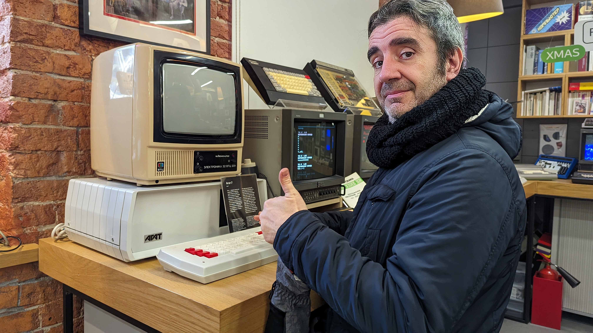
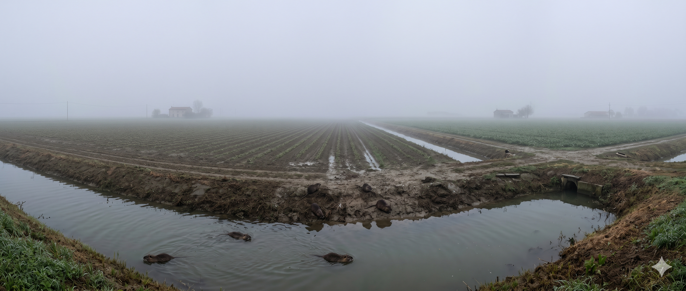
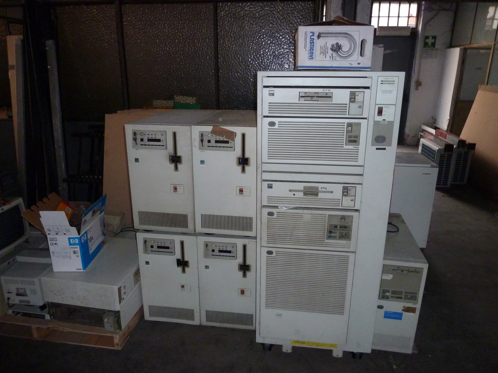
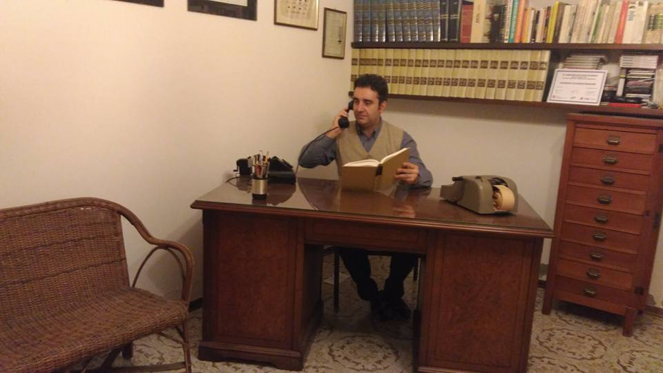
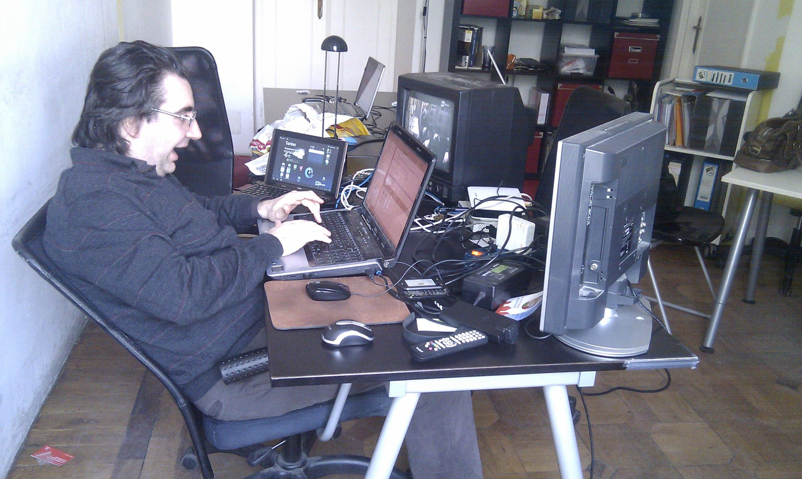
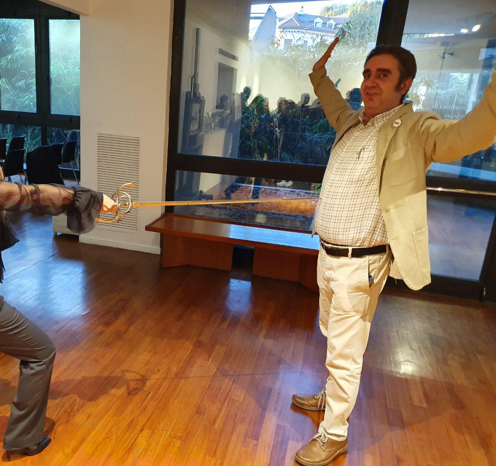
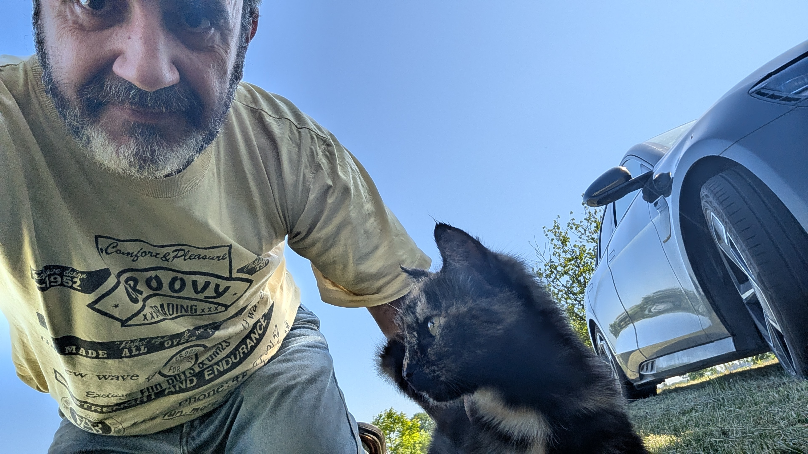

Poltroweb bonus track: same Andrea as the main site, only here the HTML is older on purpose and the jokes have footnotes.

Born in 1974 -- a pivotal year in which the world was debating whether to become definitively modern or remain forever trapped in bell-bottom trousers -- our protagonist emitted his first cry in the Veneto region of Italy. But, in a plot twist worthy of a Victorian serial novel, he soon transplanted himself into the Savoyard rigour of Piedmont, becoming Turinese by adoption, tradition, and elective affinity. The homepage would summarise this as a side quest; here it gets the full cut-scene budget.
Here arises the first great biological conundrum: despite roots in a land of loud traditions and theatrical opinions, he remained methodical, curious, and suspicious of any statement that cannot be tested. He is a sort of scientific rarity, an anthropological unicum, who observes social rituals with the same detached curiosity with which an entomologist observes a colony of ants. His enthusiasm is purely intellectual, fuelled by massive doses of oxygen and bits.

His existence unfolds along an axis that would make any travel agency pale: on one side, San Salvario, the Turin neighbourhood where multiculturalism meets nightlife and creative workshops hide behind nineteenth-century doorways; on the other, Moscow, the imperial megalopolis where cold is a philosophical concept and traffic is a work of kinetic art.
It is said that he lives in a time zone entirely his own, a "Middle Earth" where he speaks Piedmontese to Russians and Russian to the residents of Via Baretti, all while attempting to explain that the difference between an algorithm and grandma's recipe is merely a matter of syntax (and how much olive oil you put in).
Legend has it that his backpack permanently contains three objects: a notebook filled with half-finished diagrams, a screwdriver set for emergency retro-hardware rescues, and a folded map with impossible itineraries between stations, museums, and maker spaces. If a train is late, he drafts a new project. If a train is early, he drafts two.
Fig. 3 - Two cities, one impossible postcard: cobbles, domes, Mole, and Alps arguing politely in the same frame.
NOTE: The author has been known to answer "what time is it?" with a philosophical shrug and a reference to Heisenberg.
While others collect stamps or regrets, he decided to save the soul of the twentieth century: he is in fact the founder of MUPIN - the Piedmontese Museum of Computing, a museum dedicated to computer history and retrocomputing. (On Poltroweb this appears as a single bullet with a Visit us badge; here it borrows adjectives until the server begs for mercy.)
For him, an old computer the size of a refrigerator is not scrap metal but a piece of technological poetry. He is capable of being moved to tears before an 8-inch floppy disk in the same way an art critic stands before a Caravaggio. He also believes spare cables will be useful someday, which the universe has neither confirmed nor denied.

His mission is scientific outreach: translating the obscure language of machines into concepts digestible by ordinary human beings. He is the man who would explain quantum physics using a set of keys lost in San Salvario as an example, or binary logic through the shades of grey of a Moscow afternoon.
Equipped with a mind that does not know the "stand-by" button, he is a volcano of ideas erupting projects at a circadian rhythm -- the same "more ideas than time" problem the homepage cheerfully admits, only with fewer emojis and more shelf space for books. His creativity is not a mere affectation but a physiological necessity: if he does not invent something new by 6:00 PM, he risks spontaneous combustion.

Notable digressions:
By day (and often by night, time zones be damned) he plays software architect the way the homepage hints: invisible cathedrals of logic, angry boundaries between services, and the calm voice that keeps production from catching fire. Decoupling, naming things, drawing boxes -- the boring sorcery behind every demo that looks effortless.
A clean architecture is still an epic poem; spaghetti code remains a personal insult. He still does the forty-minute whiteboard trance where the room assumes he has rebooted, then drops one whispered verdict: "This microservice is structurally unsound. It is merely three shell scripts in a trench coat attempting to look like a platform." The photograph below is the honest B-side: laptop, netbook with Torino weather holding the line, CRT, flat panel, mice, remotes, and wall-warts auditioning for the role of "temporary" wiring. If the desk looks like lost luggage, the moral is unchanged -- file the ticket and fix the stack.

In a plot twist that completely ruins the stereotype of the sedentary computer scientist, our protagonist is also a highly skilled swordsman. Some claim he originally took up fencing to physically parry bad design patterns from junior developers; others suggest it is just a way to add swashbuckling flair to tech lectures that were already one PowerPoint away from opera.
He approaches a duel much like a complex debugging session: he observes the opponent's runtime environment, finds the vulnerability in their execution stack, and strikes with a perfectly timed riposte. He is, terrifyingly, the only man in Europe who has actively tried to map historical fencing footwork to the seven layers of the OSI model. If the pen is mightier than the sword, he makes sure to carry both—plus a soldering iron, just in case.

A man of '74 who reached the same conclusion as Poltroweb, only with fewer blinking tags: the future is a decent neighbourhood if you pack a serious Moscow coat, Piedmontese pragmatism, and at least one cable you swear will be useful someday. Science and craftsmanship still run the show; optimism stays open-source and occasionally forks itself without asking permission.

"A builder of bridges between analogue past and digital future, a seeker of meaning between the Mole Antonelliana and Red Square, a man who has turned his sobriety into a magnifying glass for seeing tomorrow more clearly."
[ Back to Poltro's Homepage ] | [ The Twelve Labours of Poltro ]
Andrea Poltronieri
Best enjoyed the way the homepage pretends Netscape never left: grey background, honest pixels, and zero guilt about not using a JavaScript framework for a biography. If images fail to load, assume you are on a heroic text-only terminal and carry on smugly.